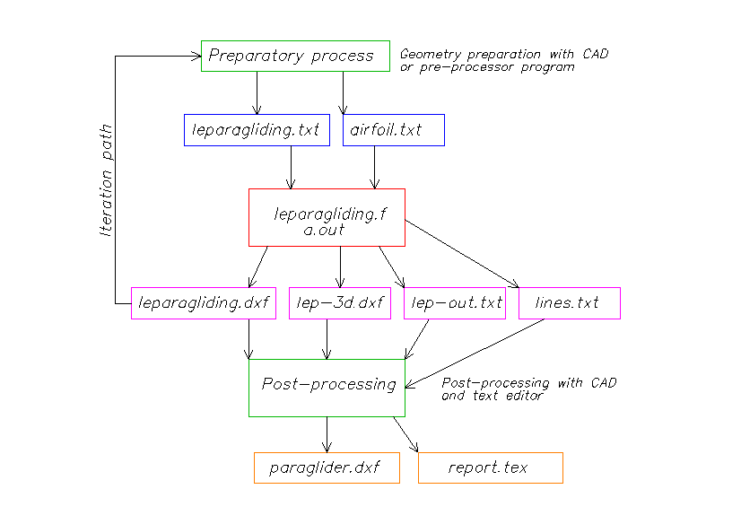
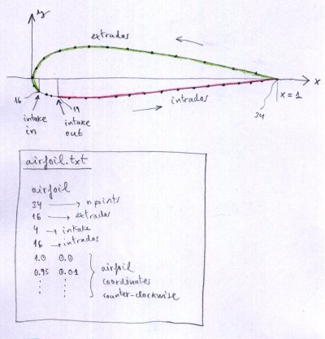
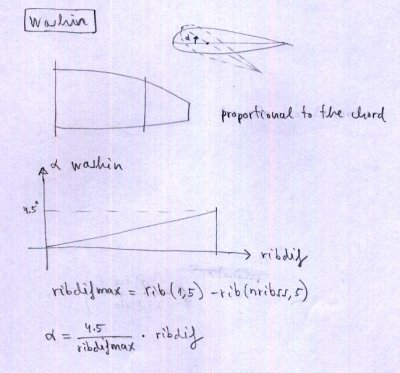
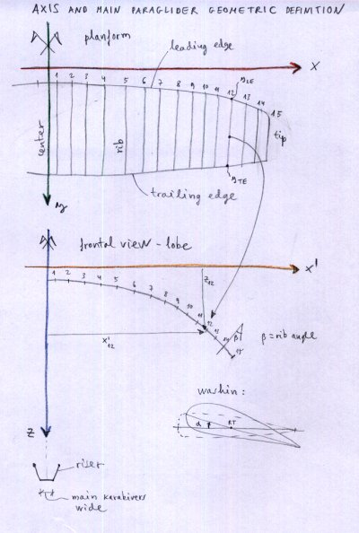
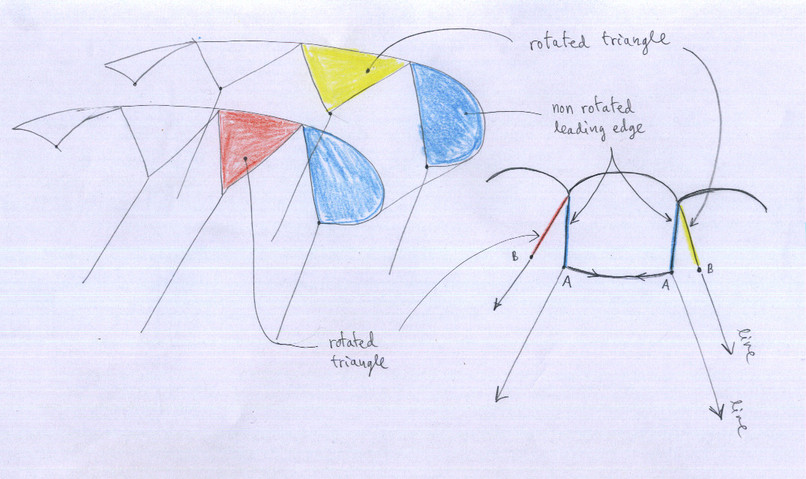

1. ВВЕДЕНИЕ
2. ОБЩИЕ ПОНЯТИЯ
3. ФАЙЛЫ, СВЯЗАННЫЕ С ПРОГРАММОЙ
4. КАК РАБОТАТЬ С ПРОГРАММОЙ
5. СОСТАВ ФАЙЛА ПРОФИЛЯ
6. СОСТАВ ФАЙЛА ВХОДНЫХ ДАННЫХ leparagliding.txt
ИНДЕКС РИСУНКОВ
В этом руководстве описывается использование LEparagliding, созданного Laboratori d'envol для проектирования парапланов. Автор программы не предоставляет никакой другой информации, кроме описанной на сайте. Гарантий правильной работы программы не существует. Вы принимаете на себя все последствия использования программы.
LEparagliding очень «загадочен» в использовании, «в стиле FORTRAN», но очень мощный. FORTRAN — это язык программирования, предназначенный для численных расчётов, что означает FORmula TRANslation. Это язык, который позволяет нам точно переводить идеи геометрии и математики в код, который производит удивительные графические и числовые результаты.
Программа реализует теорию, разработанную в книге «Paraglider Design Handbook», которую рекомендуется изучить, так как многие её материалы являются дополняющими.
Я приношу извинения, поскольку это руководство содержит объяснения в несколько грубом стиле. Возможно, некоторые темы объяснены плохо. Я буду рад предоставить дополнительные разъяснения через личные сообщения. Программа не идеальна, но она работает.
LEparagliding — это вычислительный движок, написанный на языке GNU FORTRAN, который выполняет чтение данных из входных файлов и записывает результаты в выходные файлы.
Входные файлы:
Выходные файлы:
Работа с LEparagliding состоит из следующих этапов:

Рисунок 1: Как работать с программой.
Начиная с версии 2.23, дополнительный файл lines.txt находится в выходных данных.
Начиная с версии 2.28, дополнительный файл run-log.txt находится в выходных данных.
Файл .tex всё ещё недоступен.
Файл данных профиля должен иметь следующую структуру:
Координаты упорядочены, начиная с задней кромки, проходя по верхней поверхности, через переднюю кромку и возвращаясь по нижней поверхности, и снова заканчиваясь на задней кромке.
Важно: Конечная точка верхней поверхности должна точно совпадать с началом в % отверстия (впуск воздуха), а начальная точка нижней поверхности должна точно совпадать с концом в % отверстия (выпуск воздуха). Поэтому профиль должен быть предварительно обработан в программе САПР для достижения этого. Поэтому, если вы хотите изменять начальные и конечные точки воздухозаборников по размаху, вы должны детализировать конкретные профили для этого. Начальные и конечные точки отверстий, объявленные в файле leparagliding.txt, должны соответствовать выбранным профилям.

Рисунок 2: Определение профилей
Существенно, чтобы количество точек верхней поверхности, отверстий и нижней поверхности было точно одинаковым для всех профилей, определённых в модели крыла.
Максимальное количество точек, разрешённое на профиль, — 500.
Профиль законцовки крыла нулевой толщины:
Обычно вы должны определить профиль нулевой толщины для конечного профиля законцовки крыла. Рекомендуется переместить конец верхней поверхности панели (верхняя панель) на 0% профиля и сохранить одинаковое количество точек для каждого элемента (верхняя панель «extrados», воздухозаборники, нижняя панель «intrados»). Этот профиль нулевой толщины не нужно определять, если мы используем коэффициенты усиления из раздела 30, так что коэффициент, применяемый к последнему профилю, равен 0,0.
Проектирование параплана сводится к редактированию файла leparagliding.txt либо путём создания его с нуля, либо, что более распространено и рекомендуется, путём редактирования существующей модели.
Очень важно, что нужно учитывать:
Основные единицы, предусмотренные для файла данных, — сантиметры (см), за исключением припусков на швы в разделе 6, и некоторые значения в разделах 20 и 21 будут выражены в мм. Опционально вы могли бы использовать дюймы и десятые доли дюйма, но это никогда не тестировалось и не рекомендуется.
Вы должны заполнить все необходимые параметры раздел за разделом до конца файла, следуя этому руководству. Я настаиваю на том, что самое практичное — всегда начинать с существующего шаблона.
Для каждой строки файла данных мы объясним тип параметра и его значение. Графические диаграммы очень важны для понимания того, к какому типу параметра мы обращаемся. Порядок, тип данных и количество строк имеют решающее значение для правильного чтения файла данных.
Строки 1-8:
* LABORATORI D'ENVOL PARAGLIDING DESIGN *
* Input data file 3.28 version *
**************************************************************
* Version 2026-05-01 *
**************************************************************
* 1. GEOMETRY *
**************************************************************
Строки с 9 по 24:
Альфа законцовки крыла, параметр, (альфа центра):
вещественное1: Максимальный угол крутки (washin) между центральным профилем и законцовками.
целое: Доступные значения 0, 1, 2 или 3.
Если 0 → ручной washin;
если 1 → автоматический washin старый метод, максимум на законцовке;
если 2 → автоматический washin старый метод, от центра к законцовке (первое вещественное — washin законцовки, последнее вещественное — washin центра).
если 3 → автоматический washin новый метод, пропорциональный хорде от центра к законцовке (первое вещественное — washin законцовки, последнее вещественное — washin центра).
вещественное2: угол атаки в центре (используется только в случаях 2 и 3).
Пример: 3.5 3 -1.0 → угол атаки законцовки 3,5°, случай 3, угол атаки центра -1,0°. Распределение, пропорциональное хорде, с использованием нового метода.
Тип параплана:
«ds»: профили двойной обшивки (intrados и extrados)
«ss»: парапланы с одинарной обшивкой – intrados не рисуется, но требуется специальный пилообразный профиль.
«pc»: парашюты, использующие профили двойной обшивки.
логическое: установлено в 0 или 1. Если 1, то треугольники передней кромки не будут повёрнуты (только в ss).
Строки 25 и 26:
* Rib geometric parameters
* Rib x-rib y-LE y-TE xp z beta RP Washin Rot_z Pos_z
Строки 27 и далее: геометрические свойства каждой нервюры (матрица геометрии).
Для каждой нервюры, рассматривая ортонормированную систему осей XYZ (Рисунок 4): ось X вдоль размаха крыла, ось Y вдоль центральной хорды, ось Z вертикально от крыла к пилоту.
Запишите в горизонтальную строку следующие 11 параметров (параметры 10 и 11 не обязательны):
Это одна из самых важных частей процесса определения крыла. Эти параметры не могут быть определены без предварительного чертежа, желательно в файле САПР, в котором желаемый план нарисован в соответствующем масштабе, форма свода (дуга крыла) и наклон нервюр по трём осям. Этот чертёж является одним из самых базовых и важных в проектировании (предварительная обработка).
Было бы возможно генерировать этот чертёж геометрическим препроцессором для чтения базовых данных крыла: желаемое количество ячеек, разделение, размер, форма, передняя и задняя кромки по нескольким параметрам, определённым для создания эллиптических форм. Этот опциональный препроцессор был реализован, но не внутри основной программы, потому что мы предпочитаем сохранять эту важную часть проектирования с помощью программы САПР, чтобы позволить полную свободу формы передней кромки, задней кромки, а также в подъёме и наклоне профилей. Любая конструкция возможна: нормальные крылья или бионического типа, с пиками на передней кромке или любой другой формой. Препроцессор очень полезен и генерирует матрицу геометрии, которую можно скопировать непосредственно в этот раздел. Мы думаем о том, как улучшить препроцессор, чтобы сделать его более интуитивным, возможно, с HTML-интерфейсом.
Чтобы определить профили в центре геометрии крыла, используйте трюк с определением центральной ячейки нулевой толщины.

Рисунок 3. Washin

Рисунок 4. Оси и основное геометрическое проектирование параплана

Рисунок 5. Только в парапланах «ss», параметр установлен в 0 или 1. Если «1», то треугольники передней кромки не будут повёрнуты. Контроль над указанными нервюрами будет осуществляться с использованием вещественного параметра 0.0 или 1.0 в последнем столбце раздела 2, как объяснено ниже.
Примечание: Максимально допустимое количество нервюр — 100 на сторону (200 нервюр или 199 ячеек).